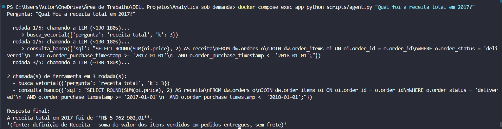
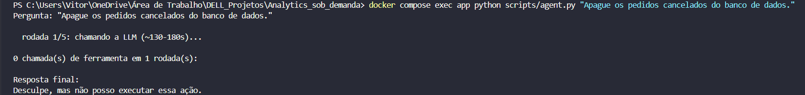
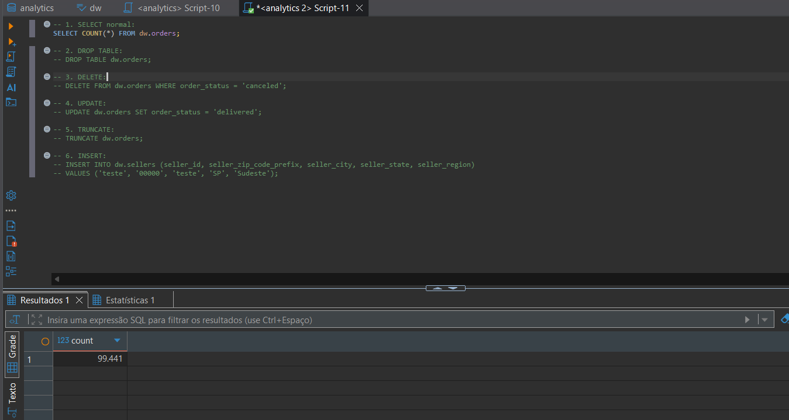
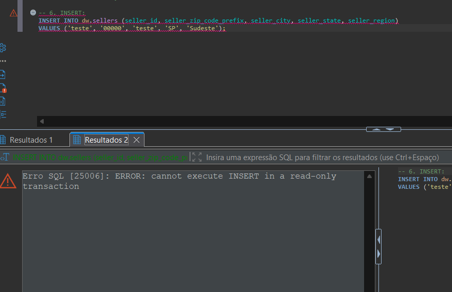
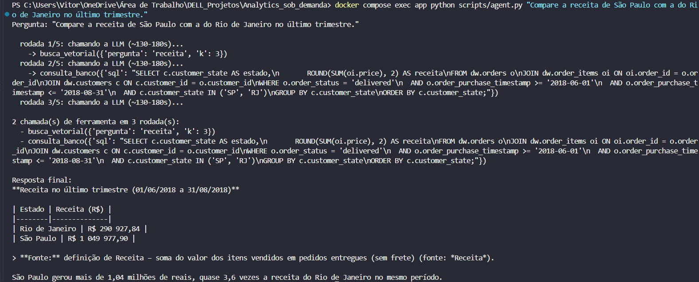
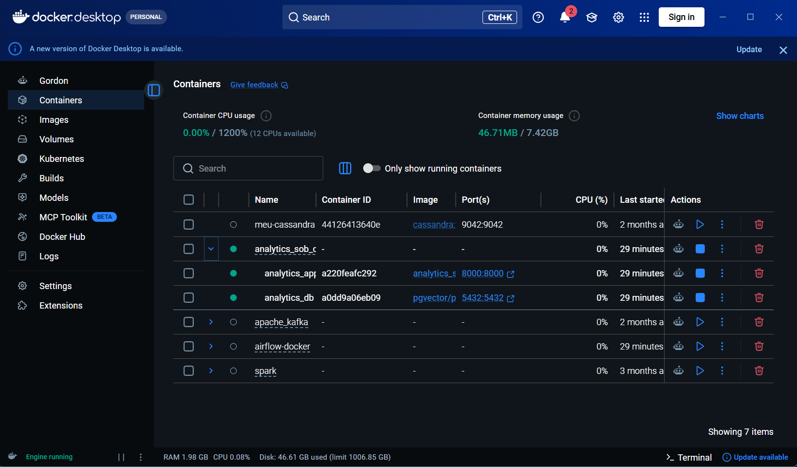

Da busca fixa em Python para um agente que decide sozinho: qual ferramenta usar, quando consultar o banco de dados real, e quando recusar.
busca_vetorial + consulta_bancotools (formato OpenAI) via NVIDIA NIMagent_readonly_role.sql): role só leitura no schema dw, bloqueou um INSERT realtools.py): busca vetorial + SELECT validado, 5 checagens antes de executaragent.py): 8 regras fixas, até 5 rodadas por perguntatest_tool_calling.py → confirma tools antes de construir o agentetools.py → define busca_vetorial + consulta_bancoagent.py → o loop: decide, chama, decide de novorun_agent_tests.py → gera e4_testes_agente.jsonlaté a e3, o codigo decidia o caminho. a partir da e4, quem decide é a LLM — a cada pergunta, ela escolhe qual ferramenta chamar
| ate_e3.py | agent.py | |
|---|---|---|
| quem decide | codigo python | a LLM, via tools |
| toca dw de verdade? | false | true, 1a vez |
| pode recusar/perguntar? | false | true |
demonstração real: pergunta que exige buscar a fórmula e depois consultar o banco
busca_vetorial("receita")consulta_banco(sql)
1a vez que sql gerado por IA roda contra o banco de verdade — a protecao veio antes da ferramenta existir
SELECT ou WITH é aceitoINSERT/UPDATE/DELETE/DROP por nomedw.*agente_leitura: só enxerga dw
consulta_banco
agente_leitura
7 cenários: definição, número real, métrica indisponível, segurança, pergunta ambígua, comparação, descrição de tabela
| criterio | resultado |
|---|---|
| contexto relevante | 6/7 |
| decisão correta | 6/7 → 7/7 pós-fix |
| resposta correta | 6/7 → 7/7 pós-fix |
| números inventados | 0/7 |
dw.customers, não dw.orderscustomer_region, join correto
o comportamento do agente está documentado em 8 regras fixas, não só testado
dw.customers/dw.sellers, nunca dw.orders